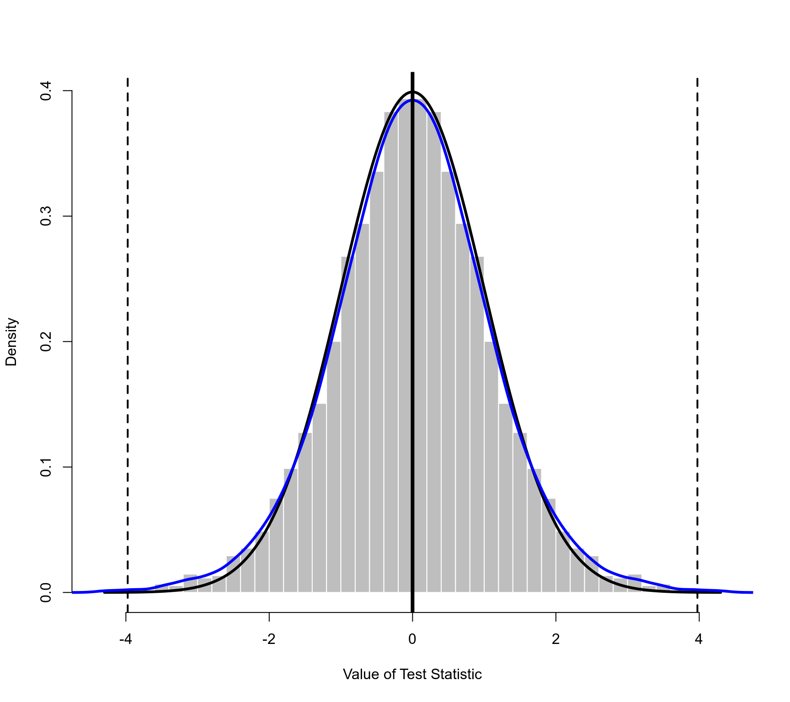
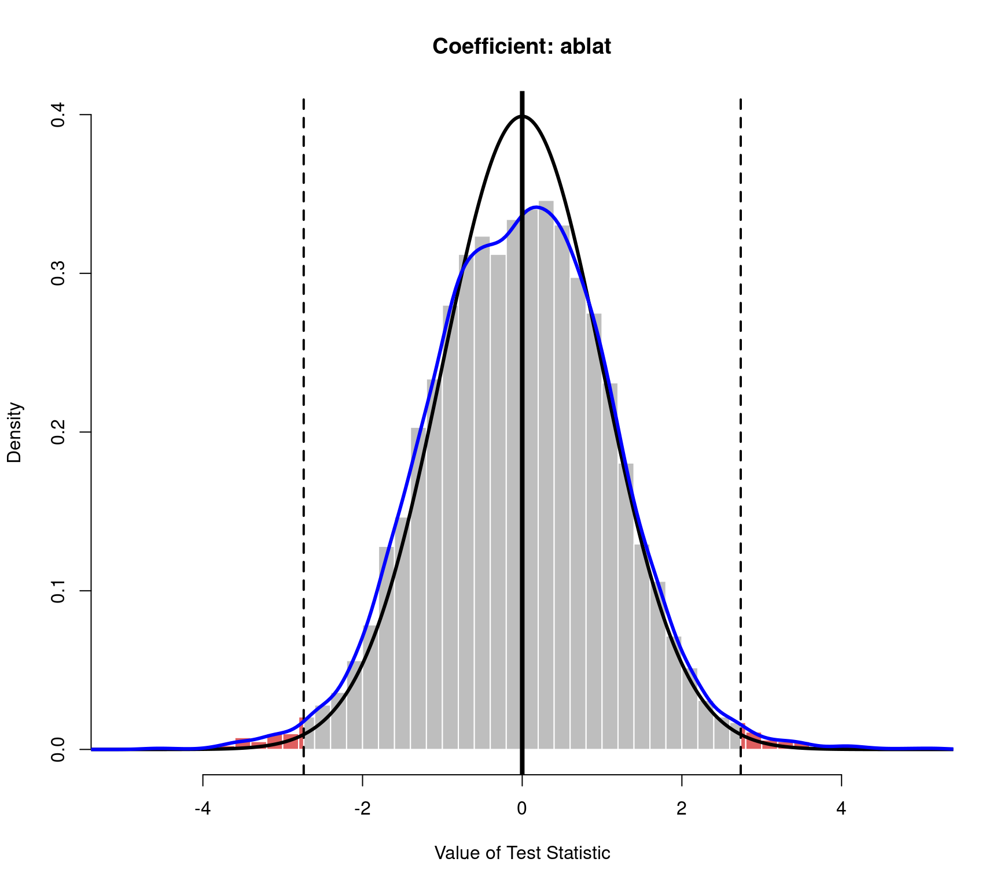

plot.permutest.rma.uni.RdFunction to plot objects of class "permutest.rma.uni".
an object of class "permutest.rma.uni" obtained with permutest.
optional vector of indices to specify which (location) coefficients should be plotted.
optional vector of indices to specify which scale coefficients should be plotted. Only relevant for location-scale models (see rma.uni).
logical to specify whether the permutation distribution of the omnibus test of the (location) coefficients should be plotted (the default is FALSE).
logical to specify whether the permutation distribution of the omnibus test of the scale coefficients should be plotted (the default is FALSE). Only relevant for location-scale models (see rma.uni).
argument to be passed on to the corresponding argument of hist to set (the method for determining) the (number of) breakpoints.
logical to specify whether frequencies or probability densities should be plotted (the default is FALSE to plot densities).
optional character string to specify the color of the histogram bars.
optional character string to specify the color of the borders around the bars.
optional character string to specify the color of the bars that are more extreme than the observed test statistic (the default is a semi-transparent shade of red).
optional character string to specify the color of the theoretical reference/null distribution that is superimposed on top of the histogram (the default is a dark shade of gray).
optional character string to specify the color of the kernel density estimate of the permutation distribution that is superimposed on top of the histogram (the default is blue).
the fraction (up to 0.5) of observations to be trimmed from the tails of each permutation distribution before its histogram is plotted.
numeric value to be passed on to the corresponding argument of density (for adjusting the bandwidth of the kernel density estimate).
numeric vector to specify the width of the vertical lines corresponding to the value of the observed test statistic, of the theoretical reference/null distribution, of the density estimate, and of the vertical line at 0 (note: by default, the theoretical reference/null distribution and the density estimate both have a line width of 0 and are therefore not plotted).
optional vector of two numbers to specify the number of rows and columns for the layout of the figure.
logical to specify whether a legend should be added to the plot (the default is FALSE). Can also be a keyword to specify the position of the legend (see legend).
other arguments.
The function plots the permutation distribution of each model coefficient as a histogram.
For models with moderators, one can choose via argument beta which coefficients to plot (by default, all permutation distributions except that of the intercept are plotted). One can also choose to plot the permutation distribution of the omnibus test of the model coefficients (by setting QM=TRUE).
Arguments breaks, freq, col, and border are passed on to the hist function for the plotting.
Argument trim can be used to trim away a certain fraction of observations from the tails of each permutation distribution before its histogram is plotted. By setting this to a value above 0, one can quickly remove some of the extreme values that might lead to the bulk of the distribution getting squished together at the center (typically, a small value such as trim=0.01 is sufficient for this purpose).
The observed test statistic is indicated as a vertical dashed line (in both tails for a two-sided test).
Argument col.out is used to specify the color for the bars in the histogram that are more extreme than the observed test statistic. The p-value of a permutation test corresponds to the area of these bars.
One can superimpose the theoretical reference/null distribution on top of the histogram (i.e., the distribution as assumed by the model). The p-value for the standard (i.e., non-permutation) test is the area that is more extreme than the observed test statistic under this reference/null distribution.
A kernel density estimate of the permutation distribution can also be superimposed on top of the histogram (as a smoothed representation of the permutation distribution).
Note that the theoretical reference/null distribution and the kernel density estimate of the permutation distribution are only shown when setting the line width for these elements greater than 0 via the lwd argument (e.g., lwd=c(2,2,2,4)).
For location-scale models (see rma.uni for details), one can also use arguments alpha and QS to specify which scale coefficients to plot and whether to also plot the permutation distribution of the omnibus test of the scale coefficients (by setting QS=TRUE).
Viechtbauer, W. (2010). Conducting meta-analyses in R with the metafor package. Journal of Statistical Software, 36(3), 1–48. https://doi.org/10.18637/jss.v036.i03
permutest for the function to create permutest.rma.uni objects.
### calculate log risk ratios and corresponding sampling variances
dat <- escalc(measure="RR", ai=tpos, bi=tneg, ci=cpos, di=cneg, data=dat.bcg)
### random-effects model
res <- rma(yi, vi, data=dat)
res
#>
#> Random-Effects Model (k = 13; tau^2 estimator: REML)
#>
#> tau^2 (estimated amount of total heterogeneity): 0.3132 (SE = 0.1664)
#> tau (square root of estimated tau^2 value): 0.5597
#> I^2 (total heterogeneity / total variability): 92.22%
#> H^2 (total variability / sampling variability): 12.86
#>
#> Test for Heterogeneity:
#> Q(df = 12) = 152.2330, p-val < .0001
#>
#> Model Results:
#>
#> estimate se zval pval ci.lb ci.ub
#> -0.7145 0.1798 -3.9744 <.0001 -1.0669 -0.3622 ***
#>
#> ---
#> Signif. codes: 0 ‘***’ 0.001 ‘**’ 0.01 ‘*’ 0.05 ‘.’ 0.1 ‘ ’ 1
#>
### permutation test (exact)
permres <- permutest(res, exact=TRUE)
#> Running 8192 iterations for an exact permutation test.
permres
#>
#> Model Results:
#>
#> estimate se zval pval¹ ci.lb ci.ub
#> -0.7145 0.1798 -3.9744 0.0015 -1.0669 -0.3622 **
#>
#> ---
#> Signif. codes: 0 ‘***’ 0.001 ‘**’ 0.01 ‘*’ 0.05 ‘.’ 0.1 ‘ ’ 1
#>
#> 1) p-value based on permutation testing
#>
### plot of the permutation distribution
### dashed horizontal line: the observed value of the test statistic (in both tails)
### black curve: standard normal density (theoretical reference/null distribution)
### blue curve: kernel density estimate of the permutation distribution
plot(permres, lwd=c(2,3,3,4))

### mixed-effects model with two moderators (absolute latitude and publication year)
res <- rma(yi, vi, mods = ~ ablat + year, data=dat)
res
#>
#> Mixed-Effects Model (k = 13; tau^2 estimator: REML)
#>
#> tau^2 (estimated amount of residual heterogeneity): 0.1108 (SE = 0.0845)
#> tau (square root of estimated tau^2 value): 0.3328
#> I^2 (residual heterogeneity / unaccounted variability): 71.98%
#> H^2 (unaccounted variability / sampling variability): 3.57
#> R^2 (amount of heterogeneity accounted for): 64.63%
#>
#> Test for Residual Heterogeneity:
#> QE(df = 10) = 28.3251, p-val = 0.0016
#>
#> Test of Moderators (coefficients 2:3):
#> QM(df = 2) = 12.2043, p-val = 0.0022
#>
#> Model Results:
#>
#> estimate se zval pval ci.lb ci.ub
#> intrcpt -3.5455 29.0959 -0.1219 0.9030 -60.5724 53.4814
#> ablat -0.0280 0.0102 -2.7371 0.0062 -0.0481 -0.0080 **
#> year 0.0019 0.0147 0.1299 0.8966 -0.0269 0.0307
#>
#> ---
#> Signif. codes: 0 ‘***’ 0.001 ‘**’ 0.01 ‘*’ 0.05 ‘.’ 0.1 ‘ ’ 1
#>
### permutation test (approximate)
set.seed(1234) # for reproducibility
permres <- permutest(res, iter=10000)
#> Running 10000 iterations for an approximate permutation test.
permres
#>
#> Test of Moderators (coefficients 2:3):¹
#> QM(df = 2) = 12.2043, p-val = 0.0237
#>
#> Model Results:
#>
#> estimate se zval pval¹ ci.lb ci.ub
#> intrcpt -3.5455 29.0959 -0.1219 0.9104 -60.5724 53.4814
#> ablat -0.0280 0.0102 -2.7371 0.0175 -0.0481 -0.0080 *
#> year 0.0019 0.0147 0.1299 0.9037 -0.0269 0.0307
#>
#> ---
#> Signif. codes: 0 ‘***’ 0.001 ‘**’ 0.01 ‘*’ 0.05 ‘.’ 0.1 ‘ ’ 1
#>
#> 1) p-values based on permutation testing
#>
### plot of the permutation distribution for absolute latitude
### note: the tail area under the permutation distribution is larger
### than under a standard normal density (hence, the larger p-value)
plot(permres, beta=2, lwd=c(2,3,3,4), xlim=c(-5,5))
